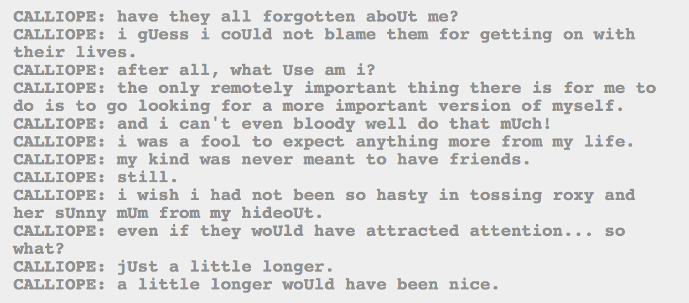

Aw you poor baby! Poor thing! Nobody has forgotten about you. :(
Poor, poor Calliope.
Interesting how the alien species keep being exceptions. Or rather, the members of it who are on the side of our heroes. We’ve got untroll-like trolls, and now an uncherub-like Cherub. I’m guessing it’s because we’re gearing up for some big union in the universe they’re going to make, with trolls and humans and a cherub together.